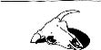

\1\2ğaç\3
Dünyadaki en kurak yer neresidir?

Antarktika. Kıtanın bazı kesimleri 2 milyon yıldır yağmur yüzü görmedi.
Bir çöl teknik olarak yılda 254 mm’den az yağış alan yer olarak tanımlanır.
Sahra Çölü yılda sadece 25 mm yağış alır.
Antarktika’ya düşen yıllık ortalama yağış da hemen hemen aynıdır, ama kıtanın Dry Valleys [Kurak Vadiler] olarak bilinen yüzde 2’lik kısmında buz ve kar yoktur ve buraya hiç yağmur yağmaz.
Dünyadaki ikinci kurak yer Şili’deki Atacama Çölü’dür. Buradaki bazı bölgelere 400 yıldır hiç yağmur yağmamıştır ve buraya düşen yıllık ortalama yağış miktarı yalnızca 0,1 mm’dir. Bir bütün olarak bakıldığında, dünyanın en kurak çölü burasıdır (Sahra’dan 250 kat daha kurak).
Antarktika dünyadaki en kurak yer olmanın yanısıra, en çok su barındıran ve en rüzgârlı yer olma iddiasını da taşıyabilir. Dünyadaki suyun yüzde 70’i buz şeklinde burada bulunur ve rüzgârın en hızlı estiği yer burasıdır.
Antarktika’nın Dry Valleys bölgesindeki eşsiz koşullar katabatik (Yunancada “alçalan” anlamına gelir) rüzgârlardan kaynaklanıyor. Bu rüzgârlar, soğuk ve yoğun havanın yerçekimi kuvveti tarafından aşağı doğru çekilmesiyle meydana gelir. Bu rüzgârlar saatte 320 km hıza ulaşarak bütün nemi (su, buz ve kar) buharlaştırır.
Antarktika bir çöl olmasına rağmen, kıtanın tamamen kurak olan bu kısımları, biraz da ironik olarak, vaha olarak adlandırılır. Buralar Mars’taki koşullarla o kadar benzerlik taşıyor ki, NASA, Viking misyonunu test etmek için buraları kullandı.